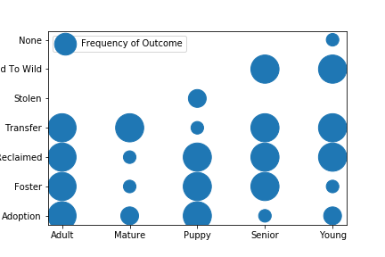

Trends in Rehoming Rates
Animal age may be one of the most influential factors in a positive outcome.
These groupings tell us that older dogs have lower rates of adoption and fostering than younger dogs. This is a logical reflection of potential adopters' preferences. Senior animals have higher rates of fostering than mature animals, which may be due to fee waiver programs and other incentives to encourage placement of senior animals. These programs are common among animal resuces and shelters in the US but it's not known if the Bloomington Animal Care and Control facility employs such a program.
The age groupings are as follows:
For this illustration, the term "favorable outcome" means the animal was adopted, placed in foster, reclaimed, or released to the wild. Because dogs and cats make up the majority of the overall animal population, it stands to reason that they also make up the majority of the favorable outcomes. Other animal types including reptiles and rabbits account for the rest of the favorable outcomes. These ratios are more or less in scale to the species' scale in the overall population, so it does not appear that species is a major factor in favorable outcome rates for most animals.
When an animal is euthanized or dies in care, it is considered an unfavorable outcome. Again, dogs and cats make up the largest population blocks, but surprisingly, rabbits appear to have higher rates of euthanasia. Reptiles and exotic animals were not among the euthanized animals in this data set, possibly due to specialized rescue and recovery efforts for these types of pets. Similarly, no wild animals were euthanized, suggesting that all were returned to the wild.